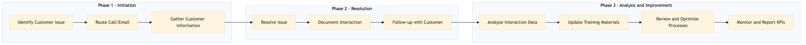

This process document outlines the management of inbound contact centre interactions via phone and email for Expedia Group (OTA) and Amex GBT / Concur (TMC). The goal is to ensure efficient and effective customer service, leading to high customer satisfaction and operational efficiency.
| Trigger | Receiving an inbound call or email from a customer |
| Outcome | The customer's issue is resolved promptly, the customer is satisfied, and the interaction data is accurately recorded for future reference and analysis. |
| Systems | Salesforce Snowflake AWS SageMaker Tableau Expedia Open World Partner Central Amadeus NDC Sabre GDS Travelport EVC One Key TravelAds S/4HANA Analytics Cloud Workday |

Click to enlarge
| Step | Name & Pain Point | Role | System | Input | Output | KPI | Flags |
|---|---|---|---|---|---|---|---|
| 1.1 | Identify Customer Issue Misidentification of issues leading to incorrect resolution paths | Customer Service Representative (CSR) | Salesforce | Inbound call or email from customer | Issue identified and categorized | Resolution time within SLA | ◆ Decision |
| 1.2 | Route Call/Email Inefficient routing leading to customer dissatisfaction | Contact Centre Manager (CCM) | Expedia Open World, Partner Central | Issue identification and categorization | Call or email routed to appropriate CSR | First contact resolution rate | ⚠ Exception |
| 1.3 | Gather Customer Information Inaccurate or incomplete data leading to incorrect resolutions | CSR | Salesforce, Snowflake | Customer interaction | Customer profile and booking details retrieved | Accuracy of customer information retrieval | ⚠ Exception |
| 1.4 | Resolve Issue Complex issues not adequately addressed leading to customer dissatisfaction | CSR | Amadeus NDC, Sabre GDS, Travelport, EVC, One Key, TravelAds | Customer information and issue details | Issue resolved or escalation initiated | First contact resolution rate | ◆ Decision |
| 1.5 | Document Interaction Incomplete or inaccurate documentation leading to lost opportunities | CSR | Salesforce, Tableau | Resolution details and customer feedback | Interaction documented in CRM system | Data accuracy and completeness | ⚠ Exception |
| 1.6 | Follow-up with Customer Neglecting follow-ups leading to potential churn | CSR | Salesforce, Email System | Resolved issue and customer satisfaction | Customer follow-up email sent | Customer satisfaction score | ⚠ Exception |
| 1.7 | Analyze Interaction Data Inadequate analysis leading to missed opportunities for improvement | Data Analyst | AWS SageMaker, Snowflake | Documented interaction data | Insights and trends identified | Quality of insights derived from data | ⚠ Exception |
| 1.8 | Update Training Materials Outdated training materials leading to suboptimal service | Training Manager | Learning Management System (LMS) | Insights and trends from data analysis | Updated training materials for CSRs | Effectiveness of training programs | ⚠ Exception |
| 1.9 | Review and Optimize Processes Inefficient processes leading to higher costs | Process Improvement Team | S/4HANA, Analytics Cloud | Training effectiveness and interaction data | Optimized service processes | Operational efficiency improvements | ⚠ Exception |
| 1.10 | Monitor and Report KPIs Lack of visibility into performance metrics | Operations Manager | Tableau, Workday | Process optimization outcomes | KPI reports generated | Overall customer satisfaction and operational efficiency | ⚠ Exception |